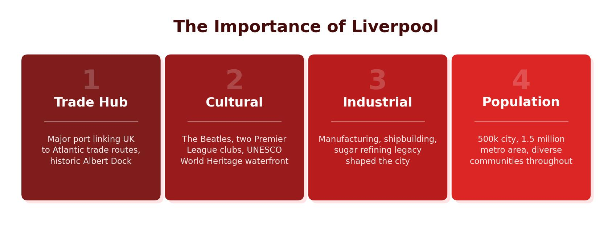

UK Population Distribution
Population distribution describes how people are spread across an area. The UK’s population of around 67 million is very unevenly distributed. The South East of England, particularly Greater London, is the most densely populated region, while the Scottish Highlands, mid-Wales and parts of Northern England remain sparsely populated.
Several factors explain this pattern. The South East has flat, fertile land, a mild climate, excellent transport links and a concentration of jobs in finance, government and services. In contrast, upland areas like the Scottish Highlands have harsh weather, thin soils, steep terrain and fewer employment opportunities, which discourages settlement.
Over 80% of the UK’s population lives in urban areas. The greatest concentration is in the South East, where London alone is home to roughly 9 million people. Meanwhile, the Highlands of Scotland have fewer than 10 people per square kilometre.

What Is Urbanisation?
Urbanisation is the increase in the proportion of people living in towns and cities. In the UK, urbanisation began during the Industrial Revolution in the late 18th and 19th centuries. People moved from rural areas to cities like Manchester, Birmingham and Liverpool in search of factory jobs — a process called rural–urban migration.
Today, the UK is one of the most urbanised countries in the world, with over 80% of the population living in towns and cities. Most major cities grew up around natural advantages such as rivers (for trade and water supply), coalfields (for energy) and flat land (for building). Liverpool is a prime example — its location on the River Mersey made it one of the world’s greatest trading ports.
Liverpool’s Location and Site
Liverpool is located in the North West of England, on the eastern bank of the River Mersey, close to where the river meets the Irish Sea. This sheltered estuary position gave Liverpool a natural deep-water harbour, ideal for large ships. The city sits on relatively flat, low-lying land, making it easy to build docks, warehouses and transport infrastructure.
Liverpool’s position on the west coast also made it a gateway to Ireland, North America and the wider Atlantic world. This geographic advantage drove the city’s growth from a small fishing village in the 13th century to one of the most important ports in the British Empire by the 19th century.
Liverpool’s National and International Importance
Trade and the Docks
Liverpool’s docks were at the heart of Britain’s global trade network. By the early 20th century, the city handled around 40% of the world’s trade. The Albert Dock, opened in 1846, was one of the first enclosed dock systems in the world and is now a UNESCO World Heritage Site. Goods including cotton, sugar, tobacco and manufactured products passed through Liverpool’s port, connecting Britain to its colonies and trading partners across the Atlantic.
At its peak, Liverpool was the second most important city in the British Empire after London. The Albert Dock alone handled trade worth billions in today’s money, and the city’s wealth funded grand civic buildings such as St George’s Hall and the Three Graces on the Pier Head.
Cultural Importance
Liverpool has an outsized cultural impact for a city of its size. The Beatles — John Lennon, Paul McCartney, George Harrison and Ringo Starr — formed in Liverpool in 1960 and went on to sell over 600 million copies worldwide, making them the best-selling music act in history. The Cavern Club, where they performed nearly 300 times, remains a major tourist attraction.
Football is another defining feature. Liverpool FC and Everton FC are both globally recognised clubs. Liverpool FC alone has won six European Cups and attracts fans from around the world to Anfield. The rivalry between the two clubs — known as the Merseyside derby — is one of the oldest in English football.
In 2008, Liverpool was named the European Capital of Culture, which brought investment, regeneration and international attention. The city has a thriving arts scene with institutions like Tate Liverpool, the Royal Liverpool Philharmonic Orchestra and the Walker Art Gallery. Its cultural heritage — from music and sport to architecture and maritime history — makes it one of the UK’s most visited cities outside London.
Education
Liverpool is a major centre for higher education. The city and the wider Merseyside area are home to 11 universities, including the University of Liverpool (a Russell Group institution), Liverpool John Moores University and the Liverpool Institute for Performing Arts (founded by Paul McCartney). Around 50,000 students study in the city each year, contributing significantly to the local economy and creating demand for housing, services and entertainment.
Transport Links
Liverpool is well connected by road, rail, sea and air. The M62 motorway links the city to Manchester, Leeds and the east coast. Liverpool Lime Street station provides direct trains to London (approximately 2 hours 15 minutes). Liverpool John Lennon Airport serves destinations across Europe, while the Port of Liverpool remains one of the UK’s busiest container ports, handling £32 billion worth of cargo annually.
Liverpool attracts over 67 million visitors per year, generating around £5 billion for the local economy. Key tourist sites include the Albert Dock, the Beatles Story museum, Anfield stadium and the waterfront. Tourism has played an important role in Liverpool’s regeneration since the decline of its traditional port industries in the mid-20th century.
Liverpool’s importance stretches well beyond trade. The city is globally recognised for music (the Beatles), football (Liverpool FC and Everton FC), education (11 universities, 50,000 students) and tourism (67 million visitors per year). These factors make it one of the UK’s most significant regional cities.